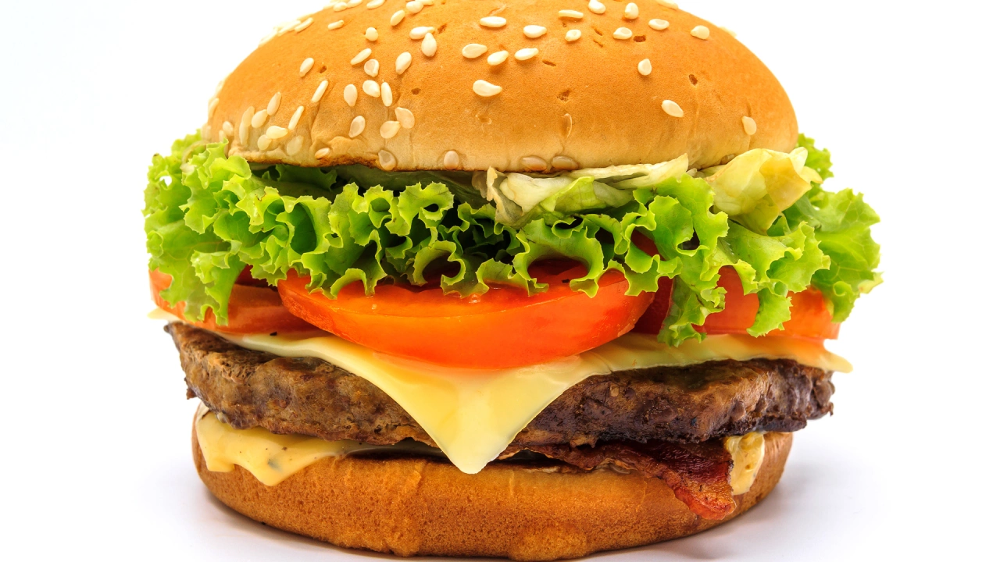

Cheeseburger Recipe

How to make a Double Cheeseburger
In order to make a double cheeseburger we have to have two buns, tomato slices, two patties, some cheese and of course lettuce.
Ingredients
- 2 buns
- 2 Tomato slices
- 2 Beef patties
- 1 Slice of cheese
- Lettuce
Steps to make
- Cook the patties
- Cut the tomato slices while patties cook
- Cut the lettuce and prep the buns
- Cut a slice of cheese over one of the patties to cook a little
- Put it all together, buns, patties and condiments
Click to go back to main page